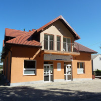
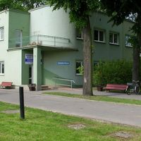

Twoje zdrowie jest dla nas najważniejsze
 Nasz ośrodek zdrowia oferuje kompleksową opiekę medyczną dla całej rodziny. Nasz zespół specjalistów zapewni Ci najlepszą opiekę.
Adres: Łubki Nowe 5, 09-454 Bulkowo
Telefon: +48 24 265 13 13
Świadczenia refundowane przez NFZ.
Profesjonalne badania diagnostyczne z użyciem nowoczesnego sprzętu.
Specjalistyczne konsultacje w różnych dziedzinach medycyny.
Kompleksowe programy rehabilitacyjne dostosowane do potrzeb pacjentów.
Oferujemy szeroki zakres szczepień ochronnych dla dzieci i dorosłych.
Specjalistyczna opieka dla osób starszych.
Oferujemy wizyty i hospicjum domowe dla pacjentów wymagających opieki w domu.
Opieka pielęgniarska i położnicza w środowisku domowym pacjenta.
Kompleksowa opieka lekarza pierwszego kontaktu.
Specjalistyczne zabiegi fizjoterapeutyczne dla dzieci i dorosłych.
Skontaktuj się z nami, aby umówić się na wizytę lub uzyskać więcej informacji.
Adres: Łubki Nowe 5, 09-454 Bulkowo
Telefon: +48 24 265 13 13